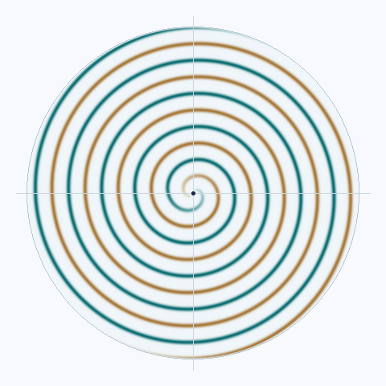

高中数学教学
从事高中数学教学，探索动态几何、数学动画与 AI 工具在教学中的应用，也开发题目解析和课堂协作工具。
高中数学教师 / 数学硕士
目前从事高中数学教学，持续开展非线性动力学相关研究，关注螺旋波、分岔、图灵斑图与种群动力学，也开发面向数学学习和课堂实践的工具。
0009-0009-6216-2201调一调参数，观察螺旋结构、扩散斑图与集体运动。

正在计算斑图…
波纹密度决定螺旋的疏密，臂数改变螺旋结构。点击图形可以移动波心。
已暂停，可以调参或开始演化。
点击或触摸图形移动波心；聚焦图形后，也可使用方向键。
u(r, θ, t) = sin(2πkr + mθ − ωt)
螺旋波使用解析相位场展示几何结构；这里的模型演示不代表论文中的数值结果。
从事高中数学教学，探索动态几何、数学动画与 AI 工具在教学中的应用，也开发题目解析和课堂协作工具。
继续硕士阶段的研究，关注螺旋波及其控制、分岔附近的斑图结构，以及种群动力学。
围绕数学学习、课堂协作和可视化开发的 6 个项目。
课堂协作
面向学校的远程喊话与班级通知系统。教师可发送文字通知和原声语音，教室端提供分级提醒，支持班级授权与语音留言。
数学教学工作台
面向学习与教学的 AI 工作台，将题目解析、Manim 数学动画、GeoGebra 动态几何和座位规划整合在同一个浏览器入口中。
多模态解题
将图片中的视觉理解、OCR 与数学推理解耦，结合图表裁剪和公式识别，处理包含几何图形、函数图表的中文数学题。
数学与逻辑对话
基于 DeepSeek 的数学聊天界面，提供 LaTeX 公式显示、输入联想补全、语音交互与 Three.js 数学粒子场景。
对话与可视化集成
连接门户、AI 对话与 MathSpace 动画工作室，配合 Manim 渲染服务和代码编辑器，探索数学可视化的一体化工作流。
数学动画生成
将自然语言描述转换为 Manim 数学动画，提供渲染进度反馈和缓存，帮助把抽象概念转成可以观看的图景。
7 篇期刊论文，按出版年份和刊期由新到旧排列。
高见、许斌、申传胜已公开
论文信息核对于 ，来源为 ORCID 与期刊 DOI 记录。
按年份由新到旧排列。
安庆师范大学已毕业
安庆师范大学已毕业
硕士毕业后，从事高中数学教学，继续开展原有研究方向的工作。
欢迎交流数学教学、非线性动力学研究与开源项目。